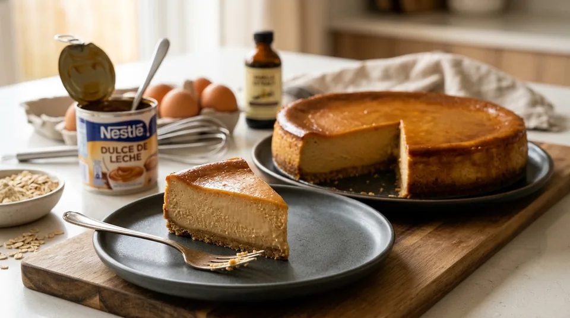
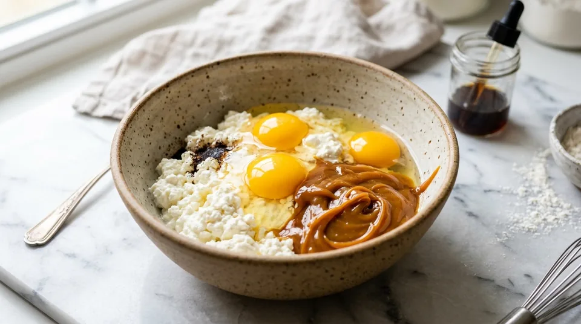
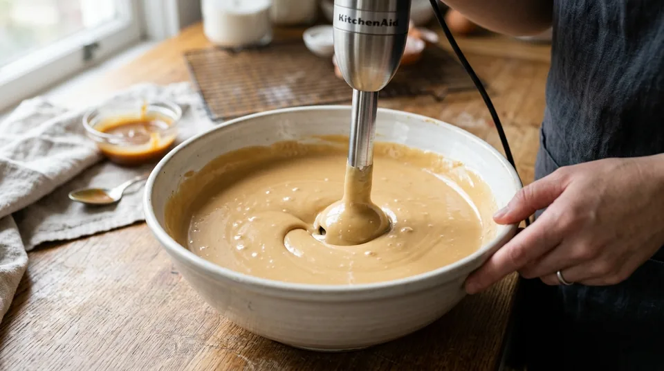
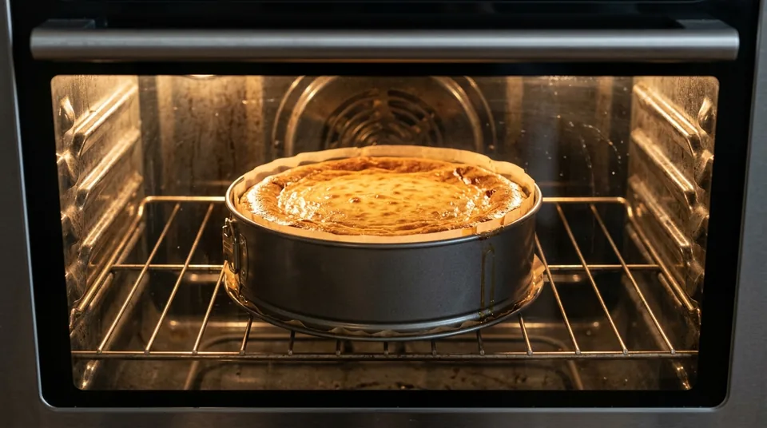

Десерты · 30–35 минут
Карамельный чизкейк (около 1 кг)
Высокий, плотный и шелковистый белковый чизкейк на обезжиренном твороге и греческом йогурте. Две версии: с вареной сгущенкой 4% и со светлой сгущенкой 1%. В духовке идеальный результат получается за 30 минут при 180 °C — чизкейк остается нежным и слегка влажным, как сырок. Для точного КБЖУ учитывайте данные со своих упаковок.
К ингредиентам
Ингредиенты · 4 порций
- Творог обезжиренный — 360 г (2 пачки по 180 г)
- Яйца куриные С0 (крупные) — 4 шт (~240 г без скорлупы)
- Вареная сгущенка 4% — 220 г (~0,6 банки)
- Греческий йогурт 2% («Простоквашино» или Teos) — 235–240 г
- Ванилин карамельный — 1 пакетик (2 г)
- Заменитель сахара (ФитПарад) — 4–5 стиков (по вкусу)
Пищевая ценность
На 100 г: 136.9 ккал · Б 11.6 г · Ж 4.1 г · У 13 г
Шаг за шагом
Подготовка и соединение ингредиентов
В глубокую миску или чашу для взбивания выложите 2 пачки обезжиренного творога (360 г), разбейте 4 крупных яйца С0, отмерьте ровно 220 г вареной сгущенки 4% и добавьте 235–240 г греческого йогурта. Всыпьте 1 пакетик карамельного ванилина (2 г) и 4–5 стиков ФитПарада для десертной сладости.

Взбивание блендером до шелковистого крема
Погружным блендером тщательно пробивайте массу 2–3 минуты круговыми движениями, пока обезжиренный творог, греческий йогурт и вареная сгущенка не превратятся в гладкий, глянцевый карамельный крем без крупинок.

Подготовка формы (16–18 см)
Для такого объема идеальна форма диаметром 16–18 см — чизкейк получится высоким и красивым. Если используете металлическую разъемную форму, застелите дно пергаментом, а бортики смажьте каплей масла. Если форма силиконовая — можно выливать крем сразу.
Выпекание (в духовке или аэрогриле)
В духовке: разогрейте духовку до 180 °C. Выпекайте на среднем уровне 30 минут. Верх схватится и слегка подрумянится, а внутри чизкейк останется нежным и немного влажным, как сырок.
В аэрогриле: выпекайте при 160°C 35 минут.

Охлаждение и стабилизация в холоде
Не нарезайте чизкейк горячим! Дайте ему остыть прямо в форме около 1 часа, затем уберите в холодильник минимум на 2–3 часа, а лучше на ночь. Творог, йогурт и яичный белок стабилизируются, а текстура станет плотной и нежной.
Другие варианты
Сливочный пломбир (светлая сгущенка 1%)
- Творог обезжиренный — 360 г (2 пачки по 180 г)
- Яйца куриные С0 (крупные) — 4 шт (~240 г без скорлупы)
- Сгущенное молоко светлое 1% — 220 г (~0,6 банки)
- Греческий йогурт 2% («Простоквашино» или Teos) — 235–240 г
- Ванилин — 1 пакетик (1–1,5 г)
- Заменитель сахара (ФитПарад) — 4–5 стиков (по вкусу)